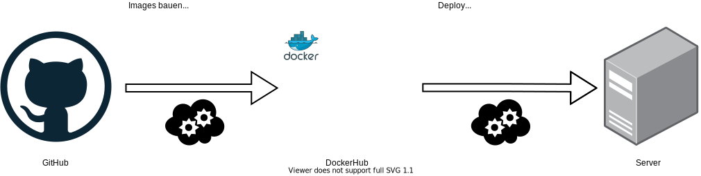
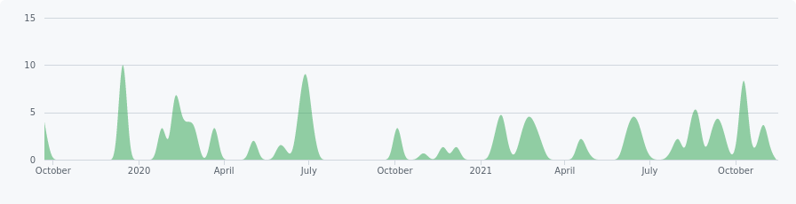
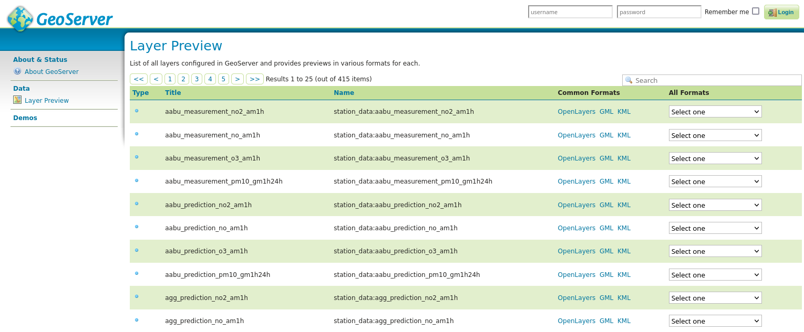
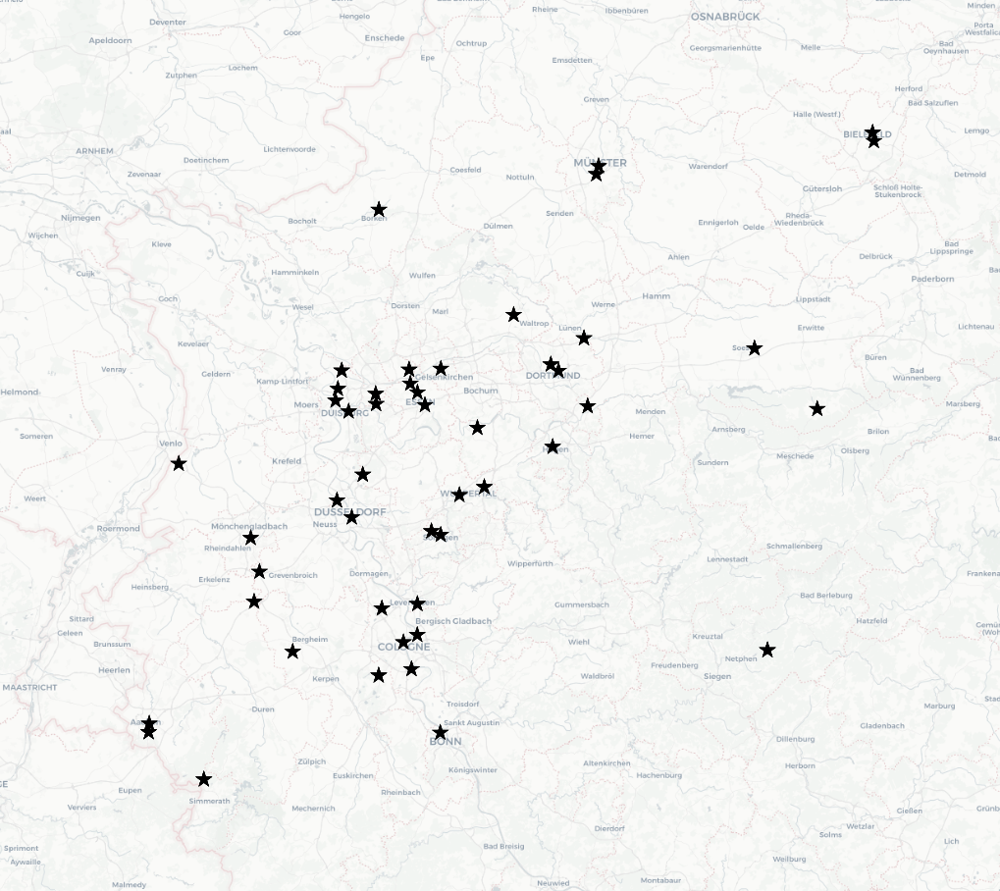
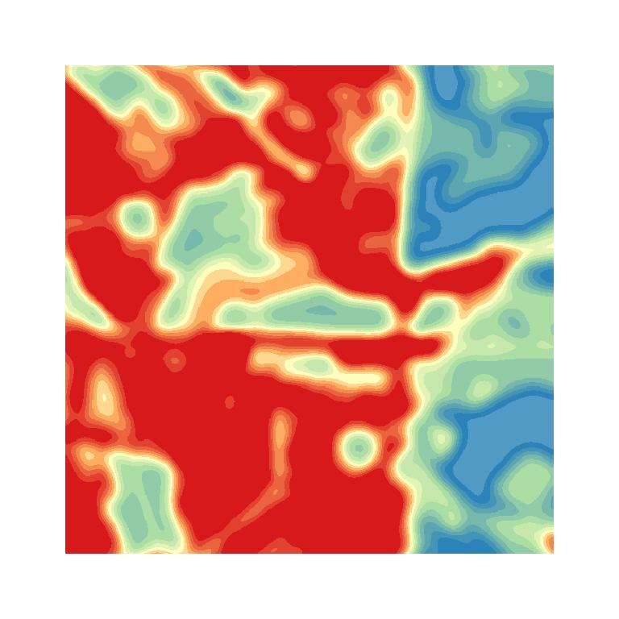

Technologien und Standards
Christian Mayer, meggsimum - Büro für Geoinformatik
SAUBER Abschlusspräsentation, 09.12.2021
Datenbank
|
|
|
|
| PostgreSQL | PostGIS | TimescaleDB |
Middleware
|
|
|
|
| GeoServer | Node.js | Java |
Frontend
|
|
|
|
| OpenLayers | Vue.js | Vuetify |
Containerization
CI - Continuous Integration
OpenSource
Offen zugängliches Repositories der GDI:sauber-sdi-docker
Aktivität Code Statistik
| Repositories | 5 |
| Beitragende | 5 |
| Gelöste Issues |
49 |
| Pull Requests |
221 |
| Commits | 797 |
| Zeilen Code | > 115 000 |
Monitoring
- GeoHealthCheck für Dienste
- Datenbanküberwachung
- Benachrichtigung per Slack oder Email
Schnittstellen
- Maschinen-lesbar
- offen zugänglich
- per URL
Verwendete Standards
- WFS - Web Feature Service
- WMS - Web Map Service
- WCS - Web Coverage Service
WMS - Web Map Service
- Visuelle Darstellung
- Rasterdaten
- auch für Vektordaten
WFS - Web Feature Service
- Vektordaten
- für Geometrien
- Punkte, Linine, Polygone, ...
WCS - Web Coverage Service
- rohe Rasterdaten
- ohne visuelle Darstellung
GeoServer
415 verfügbare Layer
 sauber-sdi.meggsimum.de/geoserverStations Data
Stations Daten
- als WFS
- in vielen Formaten (JSON, CSV, Shapefile, ...)
{
"type": "FeatureCollection",
"features": [
{
"type": "Feature",
"id": "aabu_measurement_no2_am1h.fid-637c4f59_17d144adfe7_-1afb",
"geometry": {
"type": "Point",
"coordinates": [
4045493,
3078810
]
},
"geometry_name": "geom",
"properties": {
"idpk": 1,
"component_id": 2,
"component_name": "NO2_AM1H",
"station_id": 24,
"station_name": "Aachen Burtscheid",
"max_datetime": "2021-11-16T14:00:00Z",
"min_datetime": "2020-04-06T00:00:00Z",
"series": "[
{\"datetime\" : \"2021-11-16T14:00:00\", \"val\" : 11},
{\"datetime\" : \"2021-11-16T13:00:00\", \"val\" : 10}
]"
}
}
]
}
Prognosen
- als WMS oder WCS
- für NRW und Stuttgart
Simulation
- als WMS oder WCS
- für verschiedenen Untersuchungsgebiete
|  | |
| current | change |
Autoren
Christian Mayer
Jakob Miksch
meggsimum - Büro für Geoinformatik
Schillerstraße 2a
67112 Mutterstadt
chris@meggsimum.de jakob@meggsimum.de
Jakob Miksch
meggsimum - Büro für Geoinformatik
Schillerstraße 2a
67112 Mutterstadt
chris@meggsimum.de jakob@meggsimum.de
Dr. Stefan Jäger
Julian Käflein
geomer GmbH & Co. KG
Im Breitspiel 11B
69126 Heidelberg
sj@geomer.de
Julian.Kaeflein@geomer.de
Julian Käflein
geomer GmbH & Co. KG
Im Breitspiel 11B
69126 Heidelberg
sj@geomer.de
Julian.Kaeflein@geomer.de
Lizenz
Diese Folien sind unter CC BY-SA veröffentlicht.